File: 000630.gt.txt (if the image is defective, simply delete all Arabic text and the line will be excluded)
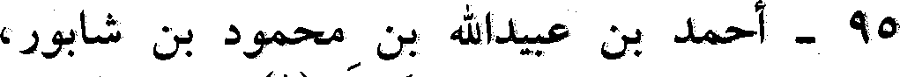
95 - أحمد بن عبيدالله بن محمود بن شابور،
File: 000631.gt.txt (if the image is defective, simply delete all Arabic text and the line will be excluded)
الأصبهاني الفقيه المقرىء، ولقبه خرطبة(1).
File: 000632.gt.txt (if the image is defective, simply delete all Arabic text and the line will be excluded)
كتب الكثير بأصبهان والري، وحدث عن عبدالله بن محمد بن وهب
File: 000633.gt.txt (if the image is defective, simply delete all Arabic text and the line will be excluded)
الدينوري، ومحمد بن إبراهيم بن زياد، وجماعة. وعنه أبو بكر بن أبي
File: 000634.gt.txt (if the image is defective, simply delete all Arabic text and the line will be excluded)
علي، وأبو نعيم الحافظ(2).
File: 000635.gt.txt (if the image is defective, simply delete all Arabic text and the line will be excluded)
96 - أحمد بن القاسم بن عبيدالله(3) بن مهدي، أبو الفرج ابن
File: 000636.gt.txt (if the image is defective, simply delete all Arabic text and the line will be excluded)
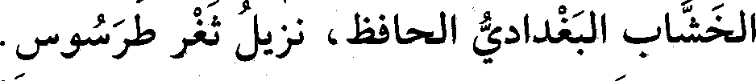
الخشاب البغدادي الحافظ، نزيل ثغر طرسوس.
File: 000637.gt.txt (if the image is defective, simply delete all Arabic text and the line will be excluded)
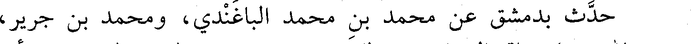
حدث بدمشق عن محمد بن محمد الباغندي، ومحمد بن جرير،
File: 000638.gt.txt (if the image is defective, simply delete all Arabic text and the line will be excluded)
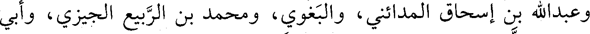
وعبدالله بن إسحاق المدائني، والبغوي، ومحمد بن الربيع الجيزي، وأبي
File: 000639.gt.txt (if the image is defective, simply delete all Arabic text and the line will be excluded)
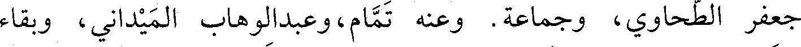
جعفر الطحاوي، وجماعة. وعنه تمام، وعبدالوهاب الميداني، وبقاء
File: 000640.gt.txt (if the image is defective, simply delete all Arabic text and the line will be excluded)
الخولاني، ومحمد بن عوف المزني، ومكي بن الغمر.
File: 000641.gt.txt (if the image is defective, simply delete all Arabic text and the line will be excluded)
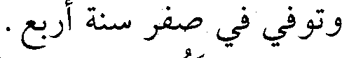
وتوفي في صفر سنة أربع.
File: 000642.gt.txt (if the image is defective, simply delete all Arabic text and the line will be excluded)
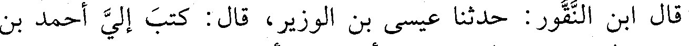
قال ابن النقور: حدثنا عيسى بن الوزير، قال: كتب إلي أحمد بن
File: 000643.gt.txt (if the image is defective, simply delete all Arabic text and the line will be excluded)
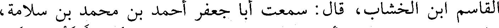
القاسم ابن الخشاب، قال : سمعت أبا جعفر أحمد بن محمد بن سلامة،
File: 000644.gt.txt (if the image is defective, simply delete all Arabic text and the line will be excluded)
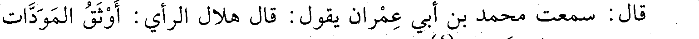
قال : سمعت محمد بن أبي عمران يقول: قال هلال الرأي : أوثق المودات
File: 000645.gt.txt (if the image is defective, simply delete all Arabic text and the line will be excluded)
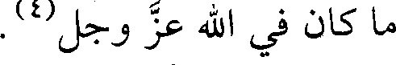
ما كان في الله عز وجل(3).
File: 000646.gt.txt (if the image is defective, simply delete all Arabic text and the line will be excluded)
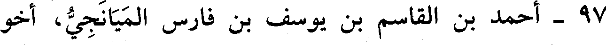
97 - أحمد بن القاسم بن يوسف بن فارس الميانجي، أخو
File: 000647.gt.txt (if the image is defective, simply delete all Arabic text and the line will be excluded)
القاضي يوسف.
File: 000648.gt.txt (if the image is defective, simply delete all Arabic text and the line will be excluded)
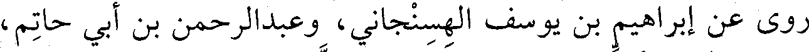
روى عن إبراهيم بن يوسف الهسنجاني، وعبدالرحمن بن أبي حاتم،
File: 000649.gt.txt (if the image is defective, simply delete all Arabic text and the line will be excluded)
وعلي بن عبدالله بن مبشر، وعثمان بن محمد الذهبي، وجماعة.
File: 000650.gt.txt (if the image is defective, simply delete all Arabic text and the line will be excluded)
وعنه ابنه صالح، وحمزة الأطرابلسي، وحمزة بن محمد البعلبكي،
File: 000651.gt.txt (if the image is defective, simply delete all Arabic text and the line will be excluded)
223
File: 000652.gt.txt (if the image is defective, simply delete all Arabic text and the line will be excluded)
5 - بكار بن محمد بن أحمد بن إسحاق، أبو الحسن المعافري
File: 000653.gt.txt (if the image is defective, simply delete all Arabic text and the line will be excluded)
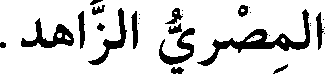
المصري الزاهد.
File: 000654.gt.txt (if the image is defective, simply delete all Arabic text and the line will be excluded)
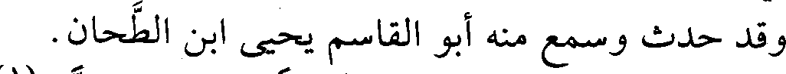
وقد حدث وسمع منه أبو القاسم يحيى ابن الطحان.
File: 000655.gt.txt (if the image is defective, simply delete all Arabic text and the line will be excluded)
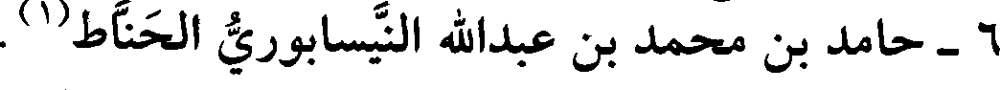
6 - حامد بن محمد بن عبدالله النيسابوري الحناط(1) .
File: 000656.gt.txt (if the image is defective, simply delete all Arabic text and the line will be excluded)
سمع الحسن بن سفيان، وجماعة.
File: 000657.gt.txt (if the image is defective, simply delete all Arabic text and the line will be excluded)
7 - الحسن بن الخضر بن عبدالله الأسيوطي.
File: 000658.gt.txt (if the image is defective, simply delete all Arabic text and the line will be excluded)
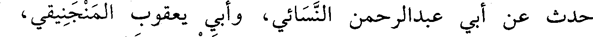
حدث عن أبي عبدالرحمن النسائي، وأبي يعقوب المنجنيقي،
File: 000659.gt.txt (if the image is defective, simply delete all Arabic text and the line will be excluded)
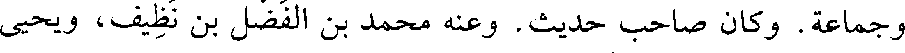
وجماعة. وكان صاحب حديث. وعنه محمد بن الفضل بن نظيف، ويحيى
To Save: `Ctrl+s`, make sure to choose `Webpage, complete`!